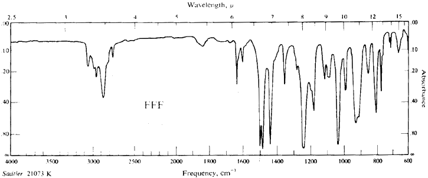

Safrole FAQ
edited by Predator, HTMLized by MescalToad
[ Back to the Chemistry Archive ]
Contents
1) Source plants
and percentages (where available)
2) Physical and chemical
properties
3) Extraction and refinement
procedures
4) Characterisation and
derivatives
5) Commercial sources (if
you think it's worth the risk)
6) Some references.
7) Additions to the FAQ
Aim : to render fascist governmental purchase
restrictions irrelevant, by providing information concerning natural
and unregulated sources.
Note: has been stripped
down of stuff unrelated to safrole or isosafrole in the precursor
documents.
1) Safrole is everywhere. Source plants.
This list is not meant to be exhaustive. Further data would be welcome.
| Plant |
Plant part/extract,
safrole
percentage |
Acorus calamus |
(origin and % unknown) |
| Angelica polymorpha |
(oil, origin and % unknown) |
| Asari seiboldii |
(origin and % unknown) |
| A. sieboldii var. seoulense |
(origin and % unknown) |
| Asari forbesii |
(origin and % unknown) |
| Asari inflatum |
(origin and % unknown) |
| Asari magnificum var dinghugense
|
(origin and % unknown) |
| Asari caudigerum var cardiophyllum
|
(origin and % unknown) |
| Atherosperma moschatum |
(bark oil, % unknown) |
| Cananga odorata (Ylang Ylang)
|
(isosafrole : origin and % unknown) |
| Cinnamomum burmannii |
(China, leaf/twig oil, 97-99%
safrole) |
| Cinnamomum camphora |
(root bark oil, 50-80% safrole) |
var Yu-Sho Hangchow (China)
|
(wood oil, 2.9% safrole) |
var Yu-Sho Kiukiang (China)
|
(wood oil, 0.8% safrole) |
var Yu-Sho Nanchang (China)
|
(wood oil, 1.7% safrole) |
|
|
(wood oil, 18.1% safrole) |
|
|
(wood oil, 0.2% safrole) |
|
|
(wood oil, 7.8% safrole) |
Cinnamomum iners |
(Malaysia, wood oil, high % safrole) |
Cinnamomum micranthum |
(wood oil, 95% safrole) |
| Cinnamomum oliveri |
(bark oil, % unknown) |
| Cinnamonum parthenoxylon |
(wood oil, Nees variety, 80% |
| Cinnamomum paucifolium |
(China, leaf oil, 68-90% safrole) |
| Cinnamomum petrophilum |
(China, leaf oil, 97% safrole) |
| Cinnamomum rigidissum |
(China, wood oil, high % safrole) |
| Cinnamomum verum ("Ceylon
Cinnamon") |
(origin and % unknown) |
| Curuma amada |
(steam-dist rhizome oil, 9.3%
safrole) |
| Doryphora aromatica |
(bark oil, % unknown) |
| Doryphora sassafras |
(leaf oil, % unknown) |
| Eremophila longifolia |
(leaf oil, % unknown) |
| Hamamelis virginiana |
(0.5% of essential oil)(Witch
Hazel) |
| Illicium parviflorum Michx |
(origin unknown, 90% safrole) |
| Illicium religiosum (illiciacea)
|
(leaf oil, % unknown) |
| Illicium verum |
|
| Juniper virginiana |
(leaf oil, 11% safrole, 6% isosafrole) |
| Magnolia salicifolia (magnoliaceae) |
(origin and % unknown) |
| Myristica fragrans |
(volatile seed oil, 0.2-0.6% safrole) |
| Nemuaron humboldtii |
(bark oil, % unknown) |
| Ocimum basilicum (labiatae) |
(leaf juice, trace, % unknown) |
| Ocotea cymbarum |
(wood oil, 84-93% safrole) |
| Ocotea pretiosa |
(S America and % unknown) |
| Piper auritum |
(Central America: leaf oil, 70% |
| Piper callosum |
(Brazil: leaf oil, 70% safrole) |
| Piper hispidinervium |
(Brazil: leaf oil, 81-88% safrole) |
| Piper nigrum |
(black pepper, trace, % unknown) |
| Sassafras albidum |
(wood oil, 80-85% safrole) |
| Theobroma cacao |
(origin and % unknown) |
| Umbellularia californica |
(leaf oil, % unknown)(Calif Sassafras) |
| Zieria smithii |
(steam-distilled leaf oil, % unknown) |
Oil of massoira bark (?) reputedly yields about 14% safrole.
A major source: CAMPHOR LAUREL ROOT : Cinnamomum Camphora
C. camphora is a pest xenophyte tree species now at plague proportions
in regions such as northern NSW. They exude chemicals via their roots,
into the soil, which kills worms and other soil biota; via their leaves
which kill aquatic organisms near leaf-drop regions, and their berries
sterilise the birds which eat them. They can live for over 1200 years.
The canonical work on camphor and safrole production from this tree
was performed by Dr Teikichi Hiraizumi, President of Takasago Chem
Industry Co, Tokyo, and can be found in the essential oils work by
Guenther.
CAMPHOR OIL is obtained by steam distillation of the wood of the
camphor tree Cinnamonum camphora Sieb. (Lauraceae) growing in China,
Taiwan, Japan [and Australia, where it is classed as a noxious weed].
The main constituent of the crude oil is camphor (ca. 50%) which can
be separated by cooling and centrifugation.
Fractionation of the mother liquor gives two oils:
1) White camphor oil is the first distillation fraction (ca
20% of the crude camphor oil). It is a colourless or nearly colourless
liquid with a cineole-like odour.
2) Brown Oil of camphor is a fraction with a boiling point
higher than that of camphor (ca. 20%) It is a pale yellow to brown
liquid with the odour of sassafras oil.
Density 1.064-1.075; Optical rotation [ND20] 1.51 - 1.55 [alpha]d
0 to +3? Flash point 6�C. Solubility 1 vol in 2 vols of 90% ethanol.
The oil contains more than 80% safrole and, like Brazilian sassafras
oil, is therefore used as raw material for the production of piperonal
via isosafrole. Camphor oils with a high safrole content can also
be obtained by steam distillation of the wood of Cinnamonum parthenoxylon
Nees.
Three Varieties of camphor oils are produced.
| Formosan Camphor oils |
camphor-linalool and camphor-safrole types. |
| Japanese Camphor oils |
camphor-safrole types. |
| Chinese Camphor oils |
cineole-terpineol-camphor (Apopin Oil) type. |
Camphor oil "true" is produced by the steam distillation
of the wood, rootstumps and branches of the type of Cinnamonum Camphora
known as Hon-Sho, which grows in Formosa and Japan. [Ed Note: Hon-Sho
oil holds 18.1% safrole)
Along with the crude oil comes a solid, partly crystalline mass of
crude camphor. The oil is separated from the crude camphor by filterpressing.
This yields crude camphor oil. The crude oil is subsequently fractionally
distilled under vacuum, and yeilds another 50% of crude camphor. The
remaining 50% of
filterpressed crude camphor oil is now free of camphor. It contains
light terpenes, cineole, safrole, terpineol, sesquiterpenes, and sesquiterpene
alcohols. These are separated into various fractions known as:
| White Camphor oil |
The light fraction, containing cineole and monoterpenes.
|
| Brown Camphor oil |
The medium heavy fraction containing up to 80% of
safrole and some terpineol. |
[Extended Monograph]
Brown oil of camphor is the medium heavy fraction from vacuum distillation
of the camphor-free oil (aka white oil, filterpressed and camphor-free).
Brown camphor oil amounts to 6 or 7 percent of the total oil, or 20-22%
of the decamphorised oil. Brown oil is produced almost entirely in
Formosa and Japan, from the Hon-Sho type of cinnamomum camphora, the
camphor tree.
This fraction is most interesting from the perfumer's point of view.
Its main constituent is safrole, and the redistilled brown camphor
can be used directly in soaps for its magnificent masking effect.
The safrole can be isolated from the oil and used as a starting material
for heliotropine, vanillin and other perfume materials. Terpineol
is also separated during the safrole-isolation and serves as is or
may be transformed into terpinyl esters.
An artificial sassafras oil, "Oil Camphor Sassafrassy"
is also produced from the brown oil by rectification and adjustment
of the content of safrole, terpenes, etc.
JUNIPER leaves - juniper virginiana
Table below: representative volatile leaf oil composition for junipers
(J. virginia var virginiana (USA), eluted from a DB-5 gas chromatography
column. Data expressed in % of total oil, the oil derived from steam
distillation of the FOLIAGE. (so no digging-up of the roots is required).
This gave us a list of approximately 140 distinct molecules which
came off the column, I left most of them off.
The significant numbers are marked in red
RT(s) |
Compound |
% |
B.P. (deg C) from Merck,
12th edn. |
| 319 |
alpha-pinene |
1.4 |
bp20:52.5 bp760:155-156 |
| 379 |
sabinene |
6.7 |
No Listing |
| 408 |
myrcene |
0.9 |
beta from: bp10:44 |
| 481 |
limonene |
18.9 |
bp763:175-176 |
| 608 |
terpinolene |
0.5 |
No Listing |
| 632 |
linalool |
4.4 |
(dl) 194-197 |
| 734 |
camphor |
3.7 |
mp:179 bp204 |
| 789 |
borneol |
0.8 |
mp:(d)208 (l):204 bp:(d) 212:(l) 210 |
| 820 |
4-terpineol |
1.5 |
bp:206-219 (d, l, and dl) |
| 1101 |
safrole |
10.9 |
mp:~11 bp:232-234 |
| 1229 |
cis-isosafrole |
6.7 |
mp:~8.2 bp760:253 bp100:179.5 |
| 1403 |
methyleugenol |
2.9 |
No Listing |
| 1700 |
delta-cadinene |
0.8 |
bp9:124 |
RT = retention time on the DB-5 column.
I gather this tree is known as the Red Cedar, though I think there
are probably several trees which come under this moniker so there
is room for confusion. It is also supposed to be the source of Red
Cedarwood Oil, though the safrole content of this is unknown. Cedarwood
oil is used for immersion
lenses in high-magnification microscope work.
Note: the incompetants at AUROMA
Australia will supply you with the leaf oil of the communis species
when you ask for the virginiana type. Ellisons of Nowra sell the seeds
to this plant, which have reliably germinated.
Sassafras
There are numerous members of the sassafras family.
A guide to the safrole content sassafras oil is its congealing point.
Accuracy is approximatey 2%
| % Safrole |
Congealing Point �C |
| 100 |
11.0 |
| 90 |
7.5 |
| 80 |
4.6 |
| 70 |
1.7 |
| 60 |
-1.3 |
(ex: Planta Medica. 61(6):574-575, 1995 Dec.ISSN 0032-0943)
Abstract: The root bark of Sassafras albidum (Nuttall) Nees Lauraceae)
was extracted at room temperature with hexane and chloroform as solvents.
The isolated essential oils were analyzed with GC and GC/MS. Thirty
compounds were identified, nine of which have not been previously
reported from this species. The major compounds were safrole (85%),
camphor (3.25%), and methyleugenol (1.10%). Ten sesquiterpenes were
also identified.
Australian Native Tree Species Bearing Safrole
From the file: NATIVSAF.DOC
Content: List of Australian native trees alleged to contain
safrole. Descriptions are supplied to assist recognition.
Page: 52 Fig: N/A Ref:16
Species: Eremophila longifolia
Family: Myoporaceae
Synonyms: Stenochilus longifolius
Vernacular names: `Berrigan', `Emu bush', `Dogwood'.
Appearance: Tall erect shrub, up to 6m high, drooping branches.
Finely hairy youngish shoots give it a grey appearance. Alternate
leaves, 5-17cm long, narrow and tapered at both ends. Purplish 2.5cm
long flowers are externally hairy the flower lobe is longer than broad,
flowers occur in groups of up to three. Fruit is ovoid or globular,
fleshy, dark coloured with a single hard four-celled stone. Flowers
nearly all year round.
Habitat: Limestone soils, usually inland, continental Aust
except extreme north.
Active con: Leaves contain an essential oil rich in safrole
and methyleugenol.
Page: 72 Fig: N/A Ref:21
Species: Zieria Smithii
Family: Rutaceae
Synonyms: None
Vernacular names: Sandfly Zieria, Sandfly Bush, Lanoline Bush,
`Stinkwood'
Appearance: A small to tallish shrub with opposite leaves.
Each leaf consists of three nearly hairless leaflets which vary from
narrow to broadly egg-shaped, and are tapered at both ends, 2.5-5cm
long. When crushed they exhibit a strong odour. Small 4-petalled white
flowers occur in loose clusters in the forks of leaves in Spring.
Habitat: Common in sandy forest or cleared areas along the
east coast from Victoria to Northern Queensland.
Active Con: Foliage essential oil. Safrole, elemicin and methyleugenol
may be present in major amounts in the steam-distilled oil.
Page: 80 Fig: N/A Ref: 16
Species: Atherosperma moschatum
Family: Atherospermae (Maybe Monimiaceae)
Synonyms: None
Vernacular names: Sassafras (Native, Black, Victorian, Southern)
Appearance: Small to medium tree, aromatic in all its parts.
Young branches, flowers and the underside of the leaves are brownish
or greyish hairy. Its opposite leaves are rigid and tapered at both
ends, sometimes with toothed margins. Leaves are often arranged in
one plane, length from 3-10cm. Solitary summer flowers in leaf forks.
Habitat: In rainforest and moist gullies of Tas, Vic and N.S.W.
as far north as the Barrington Tops district.
Active Con: The bark oil probably contains safrole. Also numerous
alkaloids.
Author notes: This species can be found with effort near the
Upper Causeway at Royal National Park, and also on the scree slopes
of Wombarra, north of Wollongong, around the remains of the coal mine
workings and impending drainage works.
Distillation: The leaves yield no safrole when dried, chopped
finely and steam distilled, and only a miniscule amount of ti-tree
(Maleleuca tree) - like oil.
Page: 83 Fig: N/A Ref: 71
Species: Cinnamomum laubatii
Family: Lauraceae
Synonyms: Cinnamomum tamala
Vernacular names: Camphorwood, Pepperberry, Pepperwood, Brown
Beech.
Appearance: A tree up to 35m high with a straight, somewhat
buttressed trunk and a smooth light brown bark, sometimes scaly on
large trees. Freshly cut bark has a pleasant aroma. Young shoots and
branchlets may be finely hairy. Leaves mostly opposite, oblong and
tapered at both ends. 7.5-15cm long, showing three prominent ribs.
Bunches of white flowers occur in upper leaf forks.
Habitat: Coastal rainforests of northern Queensland.
Active con: The bark oil contains safrole, and some alkaloids.
Page: 85 Fig: N/A Ref: 13, 16
Species: Doryphora aromatica
Family: Atherospermataceae
Synonyms: Daphnandra aromatica
Vernacular names: Sassafras (Grey, Northern Grey, Net Sassafras,
Cheedingnan (Barron river)).
Appearance: A tree up to 35m high exhibiting large pustules,
up to 6mm across. Both the yellow wood and the bark are very aromatic.
Young branchlets are sometimes 4-angled. Young shoots and flowers
are hairy. Leaves are opposite, elliptical, tapered at both ends,
6-15cm long and have toothed margins. Flowers are borne in the upper
leaf forks at the end of the branchlets. Fruits are club-shaped or
tubular, 1.5-2.5cm long. they split lengthwise when mature and release
several tufted seeds. Differs from Daphnandra micrantha by being more
aromatic and having less-toothed leaves as well as a larger plume
of hairs on the seed.
Habitat: In the rainforests of northern Queensland.
Active con: The bark oil contains a volatile oil rich in safrole,
plus several alkaloids.
Page: 86 Fig: N/A Ref: 16
Species: Doryphora sassafras
Family: Atherospermataceae
Synonyms: none
Vernacular names: Sassafras (NSW, caalang (Illawarra), boobin
(North NSW), tdjuendegong (Brisbane Water).
Appearance: A large tree 20-30m high, exceptionally 40m. Opposite
leaves are dark green and glossy, with coarsely toothed edges showing
prominent veins on the underside. They are eliptical, tapered at both
ends, narrowed at the base and 4-10cm long. Young shoots are silky
hairy. Its short-stalked, starlike flower (usually three together)
are pure white and occur in leaf forks, forming a stark contrast to
the dark shining foliage. Flowers in early spring.
Habitat: In the rainforests of the eastern districts of NSW
and south Queensland. It occurs in the blue mountains west of Sydney
and as far west as the Jenolan caves.
Active con: The leaves contains an essential oil rich in safrole,
plus several alkaloids.
Page: 151 Fig: N/A Ref: 107, 108
Species: Cinnamomum oliveri
Family: Lauraceae
Synonyms: none
Vernacular names: Sassafras (Oliver's, camphorwood).
Appearance: A tall tree up to 45m high, with a brown, nodular
bark, very fragrant when cut. Its opposite leaves are narrow and tapered
at both ends, glossy above and much paler below, 20cm long and 3.5cm
broad. Velvety, cream coloured flowers occur in bunches 15-20cm long
in upper leaf forks or at then end of branchlets. Fruits are oval
berries, 12mm long, containing a single seed, sometimes irregular
in shape owing to numerous galls. Flowers in late spring to early
summer. The similar Beilschmiedia obtusifolata has much broader leaves.
Habitat: In the rainforests of northern NSW and southern Queensland.
Active con: The bark contains an essential oil rich in safrole,
plus several alkaloids along with camphor, methyleugenol, or eugenol
depending on the species. It is not certain that the Australian authorities
would go on an enviropogrom in order to destroy these plants. They
have attempted to suppress marijuana with only limited success. It
is unlikely therefore that they can successfully suppress sassafras
trees. Incidentally, yes you can find large stands of sassafras trees
near a town called Sassafras, NSW.
2) Safrole.
CAS numbers: Safrole [94-59-7]
Related CAS numbers: dihydrosafrole [94-58-6]
1'-hydroxysafrole [5208-87-7]
isosafrole [120-58-1]
Merck Index entry: 12th edition #8468
Beilstein entry: p 553 of _19_, 1 ,V.
Beilstein Database Registry Number: 136380.
Synonymi
1,2-methylenedioxy-4-allylbenzene 3,4-methylenedioxyallylbenzene
5-(2-propenyl)-1,3-benzodioxole 4-allyl-1,2-methylenedioxybenzene
allylchatecol methylene ether allyldioxybenzene methylene ether
m-allylpyrocatechin methylene ether allylpyrocatecholmethylene ether
1-allyl-3,4-methylenedioxybenzene
Safrole is also informally known as shikimole, by some bizarre phonetic
allusion to shikimic acid, a biological precursor to several aromatic
compounds, but which is chemically quite distant to safrole. The Japanese
name for Illicium religiosum Sieb et. Zucc is "Shikimi"
Some Physical Properties
Chemical class: aromatic bicyclic phenol ether
Solubility : insoluble in water very soluble in ethanol, chloroform,
diethyl ether volatile with steam
Habit : Colourless or a reddish yellow liquid at room temp.
Solidifies into monoclinic prisms
| Molar abosorption co-efficients
at peak absorbance frequencies |
Peak Wavelength |
Absorbance ( ) |
| 236nm |
4168.6 |
| 285nm |
3801.9 |
Molar Heat of vapourisation : 13.2255kCal/gram mole
Heat of combustion : 1244.1 cal/kg
Diamagnetic susceptibility:
Melting pt : 11.2 �C (Crude isolates are reported to melt at
7-8�C)
Boiling pts : 231.5 �C at 760 mmHg (101.3kPa, atmospheric pressure)
233 �C at 759 mmHg
100-101.5 �C at 11 mmHg
91 �C at 4 mmHg
Flash point : 97�C
Optic Rotation: nD(20) 1.5383
Density : 1.096 g/cc at 20�C
Mol Wt : 162.18g/mol
Empirical formula : C10H10O2
Structural formula : CH2:CHCH2C6H3O2CH2
Smell
Safrole's smell has been variously described in terms of other molecules.
Safrole probably interacts with the same olfactory G-coupled receptors
as the volatiles in the anise plant, and this makes sense insofar
as some of the components in the oil of anise are structurally similar [but not the same as -- Erowid]
to safrole. It is accurately described as a candy-shop odour. Go into
a place which sells more sugary things than chocolatey things and
take a deep whiff. It is also reminiscent of ginger. It has been described
as smelling like MDMA, anise, rootbeer, sassafras oil, MDA, mCPP or
sodium lactate. Halo-derivatives of
safrole are said to have similar smells to the parent molecule. Safrole
is conspicuously absent from the Sigma-Aldrich Flavours and Fragrances
catalog. Some useful derivatives of safrole (piperonal "sweet,
floral", piperonyl acetate, "cherry, strawberry", piperonyl
acetone and piperonyl isobutyrate "fruity, berry") are present,
however.
Structural diagrams
Toxicity
LD50 in rats is 2.35g/kg. It is mainly metabolised
by the cytochromes P450. Neither sassafras nor the oil should be taken
internally. The use of herb teas of sassafras may lead to a large dose
of safrole. The use of safrole in foods has been banned because of carcinogenic
and hepatotoxic risks. The use of safrole in toilet preparations is
also controlled. A 47 year old woman experienced 'shakiness', vomiting,
anxiety, tachycardia and raised blood pressure following ingestion of
a potentially fatal dose of sassafras oil (5mL). Treatment was symptomatic
following the use of activated charcoal.
See: Grande GA, Dannewitz SR,
Symptomatic Sassafras Oil Ingestion,
Vet. Hum. Toxicol 1987 29 447
Recognized Carcinogen P65, Suspected Gastrointestinal or Liver Toxicant,
Kidney Toxicant, Neurotoxicant, Reproductive Toxicant. More hazardous
than most chemicals in 6 out of 7 ranking systems. At least 8 covalent
adducts are formed when calf thymus DNA is incubated with safrole-2',3'-oxide,an
oxygenated metabolite of safrole in vitro. However, no corresponding
adducts are formed with liver DNA when whole animals are exposed to
safrole 2',3'-oxide, or safrole itself. Although safrole 2',3'-oxide
is readily formed in vivo, and is sufficiently reactive to covalently
bind to DNA, it is probably not a factor in the in vivo genotoxicity
of safrole. Tox. Letters. 75(1-3):201-207, 1995 Jan. ISSN 0378-4274
Safrole FTIR Spectrum

Applications
Safrole was used for decades in perfumes and medicines
until in the 1960's. Its primary industrial application was conversion
to isosafrole, a precursor to a dye called heliotropin and vanillin,
a flavour molecule. In the 1990s it was listed, along with isosafrole,
on the prohibited import regulations list, due to its application as
a precursor in the synthesis of banned psychoactive methamphetamines.
It is still used in the preparation of the following pharmaceutical
products:
Humexinal, Inhalador Vicks, Linimento Klari, Linimento Walderr, Zam-Buk
and Vegebom du Dr Miot, though in small quantities. Piperonyl butoxide,
which is used as a synergist in aerosol pesticides, is probably synthesised
from a safrole-derived feedstock.
3) Safrole extraction and refinement
Isolating Methods
Soxhletting the root bark of cinnamomum camphora (camphor laurel),
or probably parts of other plants (see below) with distilled ethanol,
or hexane and chloroform, yields most of the available safrole, and
is cheap and effective. The solvents can be evaporated off or reclaimed
by distillation.
Dealing with the impurities in the soxhlet extract is another matter.
Steam distillation from bulk plant material is also reported to work.
Refinement methods from oil
- Cool the oil or the safrole-containing fraction of the oil, to
at least -12�C. Safrole will crystallise.
- Use fractional distillation, followed by cooling and crystallisation.
Regarding the distillation of safrole in mixtures consult Brauer,
Ber Schimmel & Co, Jubil?ms-Ausgabe (1929), 153.
- Where safrole may be contaminated by oily constituents in an essential
oil as in red camphor oil, the method of Ikeda and Takeda (a) may
be employed advantageously to determine the safrole by reparation
of the addition product with mercuric acetate and sodium chloride
in dilute acetone. The precipitate so formed should be filtered in
a Gooch funnel and weighed, and used with a correction factor to define
the percentage of safrole in the sample. This complex hydroxychloride
of safrole [C10H10O2(OH)HgCl] according to Tsukamoto (b) is readily
decomposed to regenerate safrole either by sodium sulfide and zinc
in potassium hydroxide; or hydrochloric acid. The oxychloride melts
at 141-142�C according to Fujita (c).
a) See: J. Chem. Soc. Japan 57 (1936) 565
Chem Abstracts 30 (1936) 7497
Chem Abstracts 37 (1943) 3882
b) See: J. Pharm. Soc. Japan 50 (1930) 7
c) See: J. Chem. Soc. Japan 58 (1937) 1185
Chem Abstracts 32 (1938) 3904
4) Derivatives and characterisation
Safrole will convert to allylpyrocatechol when heated
with phosphoric acid. Safrole is oxidised to piperonylic acid (mp 238�C)
by the action of potassium permanganate in aqueous acetone. Some piperonylacetic
acid (mp 87-88�C) is also produced. Safrole is oxidised to piperonal
(heliotropin, mp 38�C) by the action of potassium dichromate and dilute
sulfuric acid. Safrole isomerises to isosafrole when heated with alkalis.
See also step (3) in isolation, above.
Isosafrole (120-58-1)
Isosafrole is technically a member of the styrenes and
polymerises under the influence of acids. It is soluble in ethanol,
ether, benzene and is steam-volatile. It shares safrole's empirical
formula and molecular weight. Isosafrole exists in two isomeric forms,
the cis- isomer and the more energetically favourable trans-isomer.
Warming converts the cis-form to the trans-configuration. Isosafrole
is not as widely distributed in nature as safrole. It is best purified
via a picrate derivative, the trans- isomer of which has mp 74.75�C.
The picrate cis- isomer melts at 68.5�C.
Cis-isosafrole boils at 253�C at 760mmHg; 179.5�C at 100mmHg.
Trans-isosafrole melts at 6.7-6.8�C and boils at 247-247�C.
Trans-isosafrole has a density of 1.122g/cc.
Halo-adducts
Tribromosafrole dibromide,
("pentabromosafrole") is prepared by dissolving 0.41g of safrole
in 3mL of ethanol, and treatment with 2g bromine for eight minutes.
Heat for 15 minutes on a water bath, then cool. Recrystallise the solid
from 7mL of benzene. Needles, m.p. 169-170�C.
The 2-bromo-product,
the propyl arm is substituted with Br at the 2 position, from reaction
with HBr, is in Beilstein on p228 of _19_, 3/4, I. This bromo material
is reported to have a density between 1.5614 and 1.5640, with the following
boiling points for given pressures in mmHg:
C10H11O2Br
mmHg |
bp |
| 13 |
154-157 �C |
| 9 |
145 �C |
| 5 |
130-135 �C |
References for this 2-bromopropyl product include (from Beilstein)
Orcutt, Bogert, Am. Soc. 58 [1936] 2055;
Liebermann et al, Am. Soc. 69 [1947] 1540;
Sakakibira, J. Chem. Soc Japan Pure Chem. Sect 73, [1952] 235;
C. A. 1953 10511.
Markownikov Br-product
Getting this Markownikov depends on the absence of peroxides in the
precursor materials, such peroxides can be sequestered out by the addition
of a small quantity of hydroquinone (used in photography) to the reaction.
The 2-iodo-equivalent of the above, C10H11O2I is produced with HI under
DMSO.
5) Non regulated commercial sources
Not tested: your mileage may vary.
Why would you want a tonne of safrole? Why, for synthesis into piperonyl
butoxide for use in insecticidal preparations, or manufacture of dyes,
flavours, etc, of course, and you're too lazy to extract it from plants.
Oils to order include:
Juniper (var. virginialis) Oil, Sassafras Oil, Brown Oil of Camphor,
Nutmeg Oil.
7 Old Bailey St
Central
Hong Kong
Urlekram A/S
Klostermarken 20, DK-9550 Mariager
Denmark
Terapi Consult AS
Frysjavien 27
0883 Oslo
Norway
Luonnonruo Katukku
Adukiky
Kirvesmeihenkatu 10, 00810 Helsinki
Finland
Whitefoods Wholesale
Unit 2D, Kylemore Industrial Estate
Dublin 10, Republic Of Ireland
Marunaka KK
1-12-4 Ginza Chuo-ku
Tokyo Japan
Grace & Pearl Corp'n
6, Lane 97
Tung An St
Taipei
Taiwan
Orient Resources Company, 506 Lucky Commercial Centre,
103-109 Des Voeux Road West, Hong Kong.
Tel: +852 25172316 Fax: +852 25178741
Product |
Origin |
Specs |
Packing |
Price/Kg |
| Nutmeg Oil |
Sri Lankan |
|
100/200kg |
$16.90 |
| Pepper Oil |
Sri Lankan |
|
10/25/40kg |
$70.00 |
| Sassafras Oil |
|
95% safrole |
|
$6.00 |
Prices quoted are for reference only in US$ on fob basis valid on 1st
August, 1996. Please contact us for firm quotations. Shipments can be
made by sea/air, minimum order US$5000. Quantity discounts available.
E-mail Questions and comments to orient@orc.com.hk 1995-97
6) References
General:
Australian Medicinal Plants E.V. Lassak and T McCarthy 1983 Methuen
Australia
44 Waterloo Rd North Ryde NSW 2213 ISBN: 0454004389 Dewey: 581.6'34'0994
Dictionary of Plant Toxins (Baxter) 1996 J.Wiley and sons. ISBN 0471951072
CRC Handbook of Medicinal Herbs (Duke) CRC Press
Volumes 1-6, "The essential oils / by Ernest Guenther" 1948-56
Modern Methods of Plant Analysis : Essential Oils and Waxes
Edited by H.F. Linskens and J. F. Jackson (1991) ISBN 0-387-51915-7
and
3-540-51915-7 Springer-Verlag p153 Dewey Call No. is 581.19072/1c/(12)
).
Australian native sources of safrole:
R. Hegnauer, Chemotaxonomie der Pflanzen, Vol 6, Birkhauser Verlag,
Basel
(1969)
S.L.Everist, Poisonous Plants of Australia, Angus and Robinson, Sydney
(1974)
31: L.J.Webb, Australian Phytochemical Survey, Part 2, CSIRO Bulletin
#268;
Government Printer, Melbourne (1952)
71: T.G.H.Jones, F. Berry-Smith, Proceedings of the Royal Society of
Queensland, 37, 89 (1928)
107:J.Lauterer, Proceedings of the Royal Society of Queensland, 11,
20
(1894/5)
108:E.Gildemeister and F.Hoffmann, Die Aetherischen Oele, vol. 5
Akademie Verlag, Berlin, (1959)
Other sources of Safrole:
J G Maia et al, 'New Sources of Natural Safrole' in Perfumer & Flavorist
Vol 18, Issue 2 March/April, p 19-22 (1993)
L Zhu, D Ding, B Lawrence, 'The Cinnamomum Species in China: Resources
for
the Present and Future', Perfumer & Flavorist Vol 19, issue 4, p17
(1994)
Safrole chemistry
Merck Index entry: 12th edition #8468
PIHKAL, Alexander Shulgin, Transform Press
Beilstein entry: p 553 of _19_, 1 ,V.
Perkin W. H, J. Chem. Soc. 1927 (1663)
Martindales Pharmacopoea (30th Edn) entry p1410.3 (sassafras oil)
FTIR: Morrison & Boyd Organic Chem (3rd Edn) Page 814, Fig FFF:
Safrole.
7) Addenum
(Addition by "Indole"):
Chenopodium ambrosioides var. anthelminticum (Wormseed) (flowering
plant, % unknown)
(this one is an oil that is restricted in most countries, apparantly
due to it's high ascaridole (up to 80%) content)
Note by MescalToad: ascaridole is an unstable (even explosive)
peroxide.
These are additions to the species already mentioned:
Cananga odorata (add. var. macrophylla, other variety doesn't seem
to have safrole/isosafrole), also Cananga odorata appears to have safrole,
never seen info saying it had isosafrole...
Myristica fragrans (volatile seed oil, 0.2-0.6 (my ref has reports
up to 2%)
Myristica fragrans add:(husk oil, >1%)
Also, you could probably change Illicium verum from (Star Anise...
disputed) to (fruit, unknown) or (fruit, low%) as the same ref. I keep
mentioning has info on this one...although it is low... DISPUTED
here's the ref if you need it:
Sheppard-Hanger, Sylla. (1995) "The Aromatherapy Practitioner Reference
Manual" Atlantic Institute of Aromatherapy, Tampa (Florida)
Anonymous:
Just thought you might like to add some info onto your safrole FAQ
sheet on your site. The Australian botanicals, southern sassafras and
ziera smiithi have no safrole in their roots, bark, trunks or foliage.
Southern sass has nothing worth mentioning whilst smiithi contains lots
of methyl eugenol, which is where the confusion started I believe, the
text 'poisionous plants of Australia' is fraught with errors and as
much of the info in the current Safrole FAQ is lifted directly from
this hence the errors. This will save readers much time I believe as
I have wasted heaps of time collecting , seperating and steam distilling
all the bits. The methyl eugenol's existence was confirmed through FTIR
and NMR library matches so there is no doubt to the accuracy of this
info. The only assumption I am making is that maybe safrole only seasonally
appears in these species, as my samples were all collected in winter/spring.
|